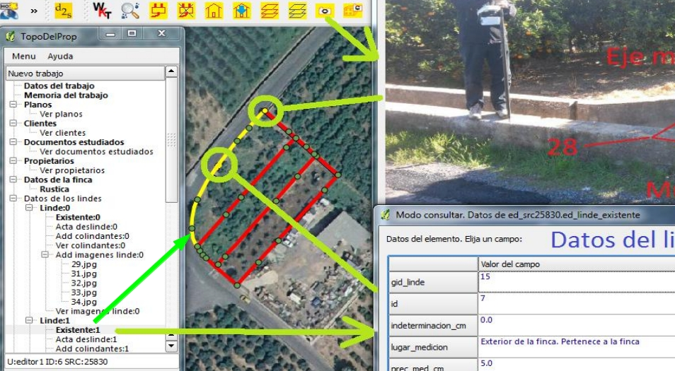
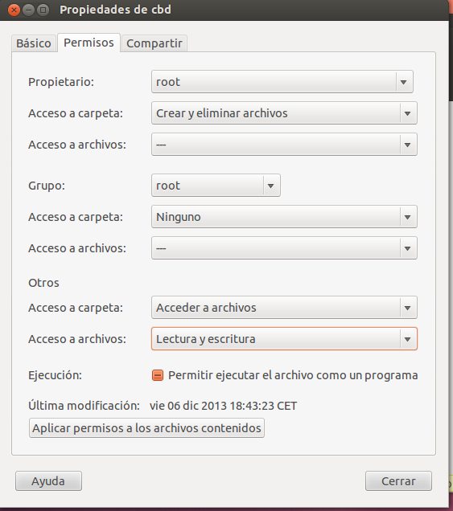
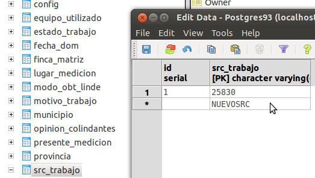

TopoDelProp
TopoDelProp. Herramienta para la gestión de datos geográficos y metadatos para sostener un catastro jurídico. Válido para cualquier país.
Instrucciones de instalación y creación de la base de datos espacial vacía en Windows y Linux
J. Gaspar Mora Navarro Dep. de Ing. Cartográfica, Geodesia y Fotogrametría Escuela de Ing. Geodésica, Cartográfica y Topográfica Universidad Politécnica de Valencia topodelprop@gmail.com
Puede encontrar la justificación del sistema y el manual del programa y configuración en el documento de tesis:
http://riunet.upv.es/handle/10251/321/browse?authority=27239&type=author
En el documento de tesis encontrará una descripción detallada de la forma de instalación en Windows del plugin TopoDelProp y del programa de gestión de usuarios TopoDelPropUsu.

Lo más probable es que quiera probar el programa rápidamente, para ver si le interesa profundizar más en él o no. Para ello, le recomiendo que instale el plugin y lo configure. Esto puede llevarle unos 5 minutos. Luego pruébelo. Acceda como editor1, o consultor_aurorizado1 a la base de datos de prueba que está instalada en 158.42.199.31. Las contraseñas son las mismas que los nombres de los usuarios que le he dicho. Pruebe el plugin, y si le interesa tener su propia base de datos, entonces siga con las instrucciones que siguen a continuación.
Los datos de conexión son:
host: 158.42.199.31
puerto: 5432
base de datos: propiedad
usuario: consultor_autorizado1
contraseña: consultor_autorizado1
El acceso al servidor a través internet es lento. Si lo desea puede instalar una base de datos con 80 trabajos topográficos académicos en su ordenador. Para ello debe tener instalado PostgreSQL 9.1, 9.2 o 9.3 + PostGIS 2 o 2.1. Descargue el archivo de base de datos de ejemplo y restáurelo en su ordenador. Es sencillo. Las instrucciones y el archivo de base de datos de ejemplo lo encontrará en una entrada del blog http://planosypropiedad.com.
Instalación del plugin
Se realizan dos sencillos pasos:
Instalar QGIS 2. En Windows se aconseja instalar directamente en la unidad C:/, por ejemplo en el directorio C:/Qgis20.
Instalar el plugin. Para instalarlo se realizan dos pasos:
Copiar los directorios del plugin pyUPVBib y TopoDelProp en C:/Qgs20/apps/qgis/python/plugins, en el caso de Windows. En el caso de Linux, hay que copiar los directorios en /home/usuario/.qgis2/python/plugins (el directorio .qgis2 es un directorio oculto en Linux, para mostrarlo se pulsa CTRL + H). El primer directorio (pyUPVBib) es una biblioteca que puede ser copiada en cualquier directorio que esté en la ruta de Python de Qgis. El segundo directorio es el propio plugin.
Para que funcione el plugin de QGIS, hay que crear un archivo, denominado dirTrabajos.txt, que en Windows hay que copiar en C:/ directamente, y en Linux en \home\usuario. El contenido del archivo es de dos líneas:
La primera línea especifica el directorio donde la aplicación cargara y descargará los archivos de memoria, imágenes, etc, para no tener que hacerlo dos veces. Debe crear esta carpeta y asegurarse de que tiene permiso de escritura.
La segunda línea especifica ruta y nombre del programa con el que se mostrarán los archivos PDF.
En Windows, el contenido del archivo podría ser (fíjese en los dos guiones del final, porque hay que ponerlos):
c:/delProp--
C:/Program Files (x86)/Adobe/Reader 9.0/Reader/AcroRd32.exe--
En Linux, el contenido del archivo podría ser:
/home/usuario/delProp--
evince--
TopoDelProp no es un programa sencillo de usar, debido a que intenta solucionar un problema muy complejo: gestionar los datos topográficos y sus metadatos en la misma base de datos. El sistema le informa de si las geometrías son correctas o no y le permite enviar o recuperar documentos completos: planos, imágenes, … El manual tiene unas 100 páginas.
Otros documentos del plugin
Si examina el directorio de instalación del plugin TopoDelProp, encontrará una carpeta, denominada documentos. Dentro existen varias subcarpetas:
BaseDatosEjemplo: Contiene un fichero y unas intrucciones para restaurar una base de datos y poder hacer pruebas y examinar el sistema. Puede descargar el archivo de una entrada del blog http://planosypropiedad.com.
cbd: contiene ficheros con código SQL que hay que ejecutar para restaurar la base de datos de ejemplo, o en el caso de que se desee crear una base de datos vacía y comenzar desde cero.
GestionUsuarios: contiene una aplicación Python para facilitar la gestión de usuarios de la base de datos
CREACIÓN DE UNA BASE DE DATOS VACÍA EN CUALQUIER SISTEMA DE REFERENCIA PARA TRABAJAR CON TOPODELPROP
Si desea una base de datos adaptada al sistema de coordenadas de su territorio, siga los siguientes pasos.
Estas instrucciones de instalación de la base de datos son más actuales que las del documento de tesis.
La diferencia para la creación de la base de datos entre Windows y Linux, únicamente reside en las rutas a los archivos de código SQL que se deben ejecutar. Por desgracia las rutas a los archivos deben especificarse de forma absoluta. Para que haya que modificar lo menos posible las rutas se propone:
Para Linux copiar el directorio cbd, que contiene todos los archivos a ejecutar en /home. Así las rutas coincidirán,
Para Windows, se propone crear la carpeta c:/delProp y copiar ahí la carpeta cbd, pero deberá cambiar las rutas, archivo por archivo, sustituyendo /home/ por c:/delProp/
Crear la base de datos propiedad
Windows: createdb -U usuario -E UTF8 propiedad
Linux: createdb -E UTF8 propiedad
La diferencia entre Windows y Linux es que en Linux, se sebe estar trabajando con un usuario Linux que coincida con el usuario de PostgreSQL. Como, para el usuario de Linux ya se ha especificado usuario y contraseña, psql ya no lo solicita.
Dentro de la base de datos, crear la extensión PostGIS, se necesita PostGIS 2
situarse en dentro del directorio cbd
Windows: psql -U usuario -d propiedad -W
Linux: psql propiedad
create extension postgis;
Crear los usuarios de partida: admin_propiedad1, editor1, consultor1, consultor_autorizado1, con idénticas contraseñas
A partir de ahora hay que ejecutar archivos .txt que contienen código SQL en la base de datos
Los archivos se ejecutan desde dentro de la base de datos propiedad con
\i \ruta_absoluta\nombrearchivo.extension
Es por esto que es conveniente copiar la carpeta cbd en \home, de esta forma
las rutas no hay que cambiarlas dentro de los archivos. Para hacerlo tendrá que actuar como
administrador. Luego, también como administrador, tendrá que conceder permisos sobre el directorio a todos los usuarios para que psql tenga acceso a ellos.

Puede eliminar estos usuarios y crear nuevos, manualmente o con la aplicación
UPVDelPropUsu.py. Encontrará la forma de instalación y manual en el documento
de tesis
Los usuarios de partida se crean ejecutando
\i /home/cbd/001_creaUsuarios.txt
Crear las tablas comunes para todos los esquemas espaciales
Antes de ejecutar este script localice los ficheros de texto provincias.txt y municipios.txt, en el directorio /home/cbd/v2/def, y sustituya las provincias y municipios españoles por los de su país.
Guarde el fichero con codificación UTF8.
Ejecute el fichero:
\i /home/cbd/comun/001_creaComun.txt
Conceder permisos a los usuarios sobre las tablas comunes
\i /home/cbd/comun/004_permisosComun.txt
Crear tablas espaciales
En este caso, se proporcionan archivos de texto que generan las tablas espaciales
para el src 25830 (código EPSG para el sistema ETRS89, UTM, huso 30)
Para cambiar el sistema, solo debe acceder a los archivos y sustituir el texto 25830 del archivo por su código EPSG.
El archivo proporcionado, que llama a otros archivos es
/home/cbd/src25830/001_crea25830.txt
Este archivo ejecuta otros tres
/home/cbd/v2/def/3src25830.txt
/home/cbd/v2/edicion/3edSrc25830.txt
/home/cbd/script/fdisparadoras/crea_disparadores_25830.txt
Debe acceder a los cuatro archivos y sustituir el texto 25830 del archivo por su código EPSG
Luego solo debe ejecutar el primero, que a su vez, ejecuta el resto.
\i /home/cbd/src25830/001_crea25830.txt
Ahora se necesita conceder permiso a los usuarios sobre los nuevos objetos de la base de datos, para ello acceda al archivo
/home/cbd/src25830/004_permisos25830.txt
y sustituya el texto 25830 por su nuevo código EPSG y ejecútelo en la base de datos
\i /home/cbd/src25830/004_permisos25830.txt
Este es el proceso para crear un SRC nuevo. Si necesita más SRCs para cubrir más territorio solo debe duplicar los cinco archivos y sustituir el viejo texto SRC por e nuevo, ejecutando después solo dos de ellos: 001_creaXXXXX.txt y 004_permisosXXXXX.txt
Le aconsejo la siguiente estrategia:
Realice una copia de la carpeta original /home/cbd/src25830
Renómbrela a /home/cbd/srcXXXXX
Renombre sus archivos 001_crea25830.txt y 004_permisos25830.txt a 001_creaXXXXX.txt y 004_permisosXXXXX.txt
Acceda a los archivos renombrados y sustituya 25830 por su nuevo código XXXXX
Realice ahora una copia de los archivos originales, en las mismas carpetas donde se encuentran
/home/cbd/v2/def/3src25830.txt
/home/cbd/v2/edicion/3edSrc25830.txt
/home/cbd/script/fdisparadoras/crea_disparadores_25830.txt
Renombre estos archivos a
/home/cbd/v2/def/3srcXXXXX.txt
/home/cbd/v2/edicion/3edSrcXXXXX.txt
/home/cbd/script/fdisparadoras/crea_disparadores_XXXXX.txt
Ejecute los archivos
\i /home/cbd/src25830/001_creaXXXXX.txt
\i /home/cbd/src25830/004_permisosXXXXX.txt
Puede repetir el proceso con todos los SRC que necesite. Se crean las tablas espaciales, se conceden los permisos a los usuarios, y se añaden los procedimientos automáticos de la base de datos.
Configuración del plugin TopoDelProp
Para poder utilizar los nuevos SRC creados desde el plugin TopoDelProp, queda un último detalle. Hay que añadir los textos de los nuevos SRC a la lista de SRC del programa. Para ello únicamente hay que añadirlos a la tabla de la base de datos dom.src_trabajo (esquema dom, tabla src_trabajo). Añada solo el número del src en la columna src_trabajo. Si tiene cinco SRCs creados, deberá tener cinco filas en esta tabla.

Joaquín Gaspar Mora Navarro